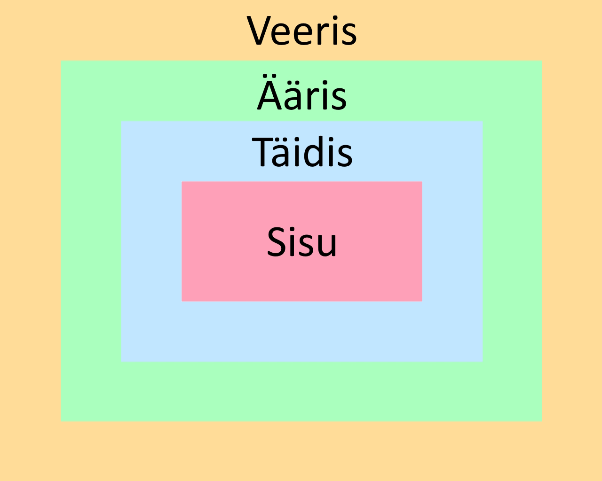

Charset (märgistik)
Määrab millist tähtede kogumit HTML dokument kasutab.
Näiteks:
- ASCII (sisaldab Ladina tähestiku tähti, numbreid ja mõndasid erimärke)
- UTF-8 (sisaldab kõiki maailma tähti, numbreid ja erimärke)
Viewport (vaateaken)
Kasutaja seadmes nähtav veebilehe ala.
Root element (juurelement)
HTML-dokumendi kõrgeima taseme element, tavaliselt <html>.
Sidebar (külgriba)
Vertikaalne veerg, mida sageli kasutatakse veebilehel navigeerimiseks või lisateabe jaoks.
Padding (täidis)
Ala elemendi sisu ja selle äärise vahel.

Margin (veeris)
Elemendi äärisest väljaspool asuv tühi ala.
Grid layout (võrgustikukujundus)
CSS-i paigutussüsteem keerukate ja reageerivate ruudustikupõhiste paigutuste loomiseks.
Inline element (reasisene element)
HTML element, mis ei alga uuelt realt ning kasutab ainult vajalikku laiust.
Block element (plokk element)
HTML element, mis algab uuelt realt ning kasutab kogu saadaoleva laiuse.
Border-box (piirikast)
Kasti suuruse väärtus, mis sisaldab täidist ja äärist elemendi kogulaiuses ja kõrguses.
Padding-box (täidiskast)
Kasti suuruse väärtus, mis sisaldab ainult täidist elemendi kogulaiuses ja kõrguses.
Wireframe (traadiraamistik)
Visuaalne juhend, m is esindab veebilehe või liidese põhistruktuuri.
Content stacking (sisu kuhjamine)
Elementide paigutus veebilehel kihtidena.
Shorthand (kiirkiri)
Lühike viis CSS-i omaduste kirjutamiseks ühe omaduse abil.
Media query (mediapäring)
CSS-i funktsioon, mis võimaldab stiilide rakendamist sõltuvalt seadme omadustest.
Hover (hõljuma)
Olek, kus kasutaja hõljutab kursorit interaktiivse elemendi kohal.
Scroll (kerima)
Sisu liigutamine ületäitunud konteineris.
Hyperweb (hüperveeb)
Omavahel täiustatud või ühendatud veebikeskkond.
Semantic markup (semantiline märgistus)
HTML-märgendite kasutamine, mis annavab edasi neis sisalduva sisu tähendust.
Input (sisend)
Interaktiivne element, kus kasutajda saavad andmeid sisestada.
Disabled (keelatud)
Elemendi olek, kus element ei ole interaktiivne.
Checkbox (märkeruut)
Kasutajaliidese element, mis võimaldab kasutajatel valikut valida ja tühistada.
Radio buttons (valikunupud)
Kasutajaliidese elementide kogum, kus saab korraga valida ainult ühe antud valikutest.
Dropdown select (rippmenüü valik)
Kasutajaliidese element, mis võimaldab kasutajatel valida rippmenüüs olevate valikute hulgast.
Toggle switch (lülituslüliti)
Kasutajaliidese element, mida saab sisse ja välja lülitada.
Slider (liugur)
Kasutajaliidese element, mis võimaldab kasutajatel valida vahemikust.
Tooltip (viipemärkus)
Väike hüpikaken, mis annab lisateavet kui kursorit elemendi kohal hõljutada.
Autocomplete (automaatne täitmine)
Funktsioon, mis ennustab ja soovitab kasutajal andmete sisestamisel võimalikke andmeid.
UI library (kasutajaliidese raamatukogu)
Eelkujundatud kasutajaliidese komponentide ja elementide kogu.
Näiteks:
- Bootstrap
- Tailwind CSS